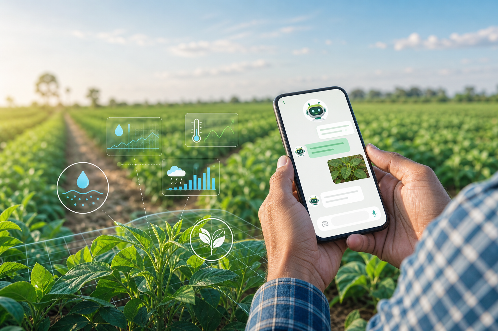

Soil-aware advice
Uses soil condition inputs such as moisture, nutrients, and field type to suggest crop-specific care.

AI farming guidance for every field
A smart chatbot that helps farmers plan crop care, understand soil and weather conditions, and respond quickly when crop failure risks appear.
"Your soil moisture is low and rain is unlikely today. Irrigate in the evening and check leaf yellowing tomorrow."
Informational guidance only. Verify important decisions with local agricultural experts or official advisories.The challenge
Farming decisions depend on crop type, soil health, local weather, season, pest pressure, and early signs of crop stress. Crop Bot brings those signals together in a simple chat experience, giving farmers practical steps when they need them most.
Innovation
Uses soil condition inputs such as moisture, nutrients, and field type to suggest crop-specific care.
Combines local weather data with crop needs to guide irrigation, spraying, sowing, and harvesting decisions.
Farmers can ask questions in natural language instead of searching through complicated farming manuals.
Crop failure support
When farmers notice poor growth, disease symptoms, water stress, or unexpected crop damage, Crop Bot helps them understand likely causes and recommends practical next actions.
How it works
Crop name, location, growth stage, soil condition, and visible field problems.
Soil and weather signals are matched with crop requirements and risk factors.
The farmer gets clear steps for field work, prevention, or recovery.
Project impact
Future-ready agriculture
Built to support farmers with timely field work advice, crop requirement planning, soil and weather awareness, and faster response during crop failure.